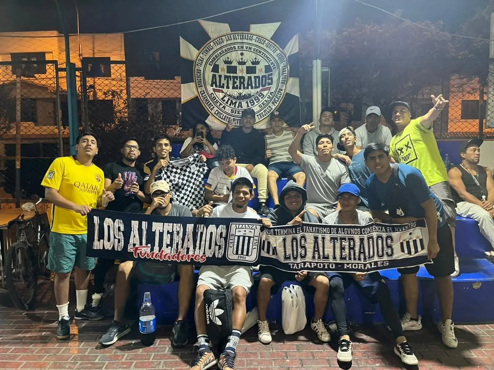

Nace Alianza
Un club que empezó desde abajo y que con el tiempo se convirtió en símbolo de pertenencia para generaciones enteras.
DEL PUEBLO · DE LA VICTORIA · PARA SU GENTE
Polos, telas y banderolas hechos para llevar una historia que nació en la calle, creció en el barrio y encontró su casa en La Victoria.
1901 · UNA HISTORIA QUE SIGUE VIVA
Alianza Lima nació en 1901 y con los años construyó una identidad profundamente popular. En las décadas siguientes, La Victoria, el trabajo, el barrio, la comunidad afroperuana y una manera propia de vivir el fútbol terminaron formando una de las tradiciones más reconocibles del deporte peruano.
Un club que empezó desde abajo y que con el tiempo se convirtió en símbolo de pertenencia para generaciones enteras.
La cercanía entre jugadores, amigos, trabajadores y vecinos consolidó el nombre que todavía acompaña al club: los Íntimos de La Victoria.
La Victoria dejó de ser solo una ubicación. Se volvió una forma de nombrar el origen, la comunidad y el orgullo aliancista.
La inauguración del estadio del club reforzó el vínculo entre la institución, el distrito y su gente. Desde entonces, Matute es casa, encuentro y memoria.
MÍSTICA GRONE
No es una frase de marketing. Es la mezcla de barrio, familia, memoria, música, fe, tribuna y pertenencia que hizo que tanta gente aprendiera a decir “somos” antes de decir “son”.
Una denominación ligada históricamente a la identificación popular del club y a su vínculo con trabajadores y barrios de Lima.
Más que un apodo: una forma de hablar de cercanía, confianza, compadrazgo y comunidad.
El territorio que terminó convirtiéndose en un símbolo que acompaña al aliancista esté donde esté.
La identidad se construye en la constancia: estar, volver, cantar, acompañar y sostener los colores.
LA MÚSICA TAMBIÉN ES MEMORIA
El aliento organizado, el bombo, los ritmos populares y las canciones de tribuna forman parte de la cultura aliancista. Mientras navegas, el reproductor del Rincón mantiene ese ambiente vivo. Cuando termines de subir los audios, entrarán automáticamente al repertorio.
CATÁLOGO
Polos, telas, banderolas y pedidos personalizados para barrio, viaje, grupo, tribuna o colección.
HECHO POR NOSOTROS
Modelos reales, pedidos reales y telas que ya encontraron su lugar en barrios, viajes y tribunas.

TU PEDIDO · TU BARRIO · TU HISTORIA
¿Un polo para tu gente? ¿Una tela para viaje? ¿Una banderola con nombre, fecha o barrio? Déjanos la idea y arma la solicitud.
DESDE LA TRIBUNA
El video, las luces, el movimiento y la música acompañan toda la experiencia para que el Rincón se sienta como lo que es: un espacio hecho desde la identidad grone.
DESDE LA VICTORIA PARA DONDE ESTÉS